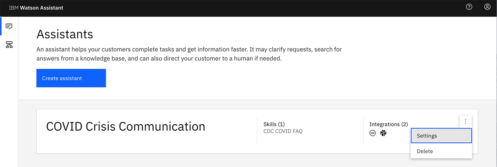
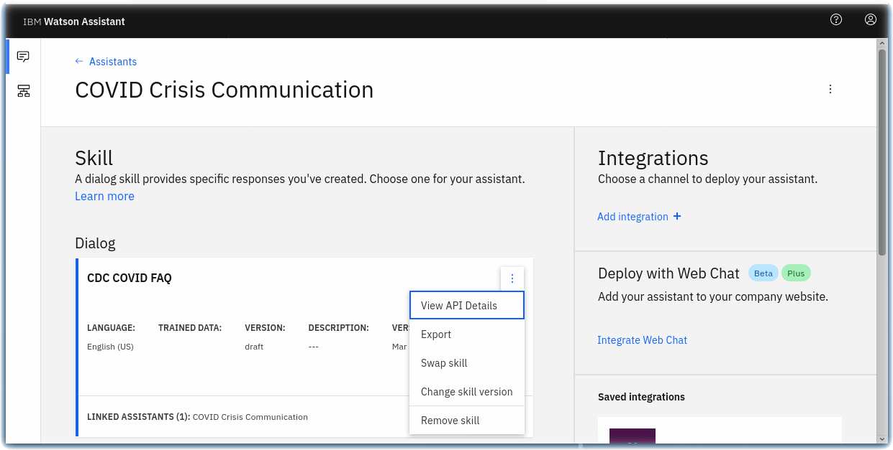
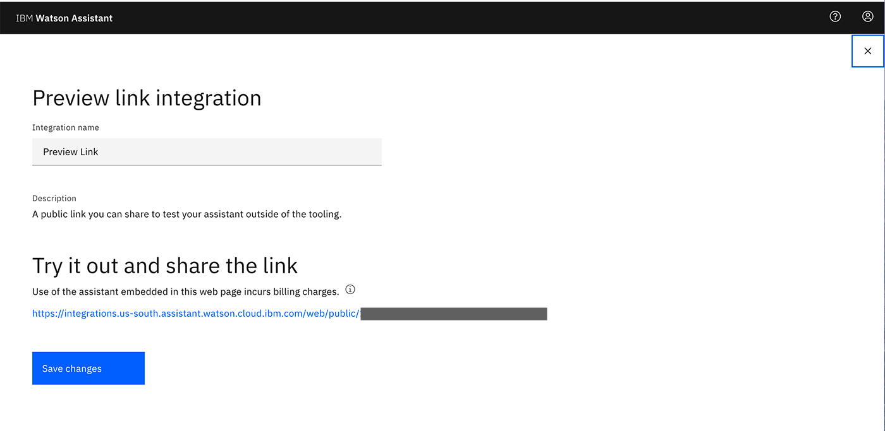

STEP 1: Create a crisis communication chatbot and connect it to news and COVID-19 data sources
Warning
This material is part of the World Wide IBM Call for Code 2020 Solution Starter Kit. Some links may not be working, however, the original contents are kept for reference only.
In times of crisis, chatbots can help people quickly find answers they need to critical questions. In the case of a pandemic like COVID-19, people might be trying to find basic information about testing, symptoms, community response, and other resources.
This tutorial shows you how to create a crisis communication chatbot using IBM® Watson™ Assistant and how to add webhooks to Watson Assistant to query for dynamic data using Watson Discovery and COVID-19 APIs.
Learning objectives
In this tutorial, you will:
- Provision an instance of Watson Assistant
- Add a dialog skill to your Watson Assistant instance
- Connect your Watson Assistant with Watson Discovery
- Create Cloud Functions
- Integrate data sources via a Watson Assistant webhook
Prerequisite
- Register for an IBM Cloud account, if you do not have an account yet. Otherwise, please proceed to IBM Cloud login
- Download the code from this GitHub repository
Estimated time
This tutorial takes about 40 minutes to complete.
Create your chatbot by setting up a Watson Assistant instance
We show you how to create a chatbot using Watson Assistant, a tool that enables you to build conversational interfaces into any application, device, or channel.
Step 1. From the IBM Cloud catalog, provision an an instance of Watson Assistant.
Step 2. Launch the Watson Assistant service.
Step 3. Click Create assistant and follow these detailed instructions for how to create an assistant.
Step 4. Name the Watson Assistant instance COVID Crisis Communication

Step 5. Click Add Dialog skill to add this to your assistant. Follow the documentation if you have questions.

Step 6. Click Import skill > Choose JSON file and import the skill-CDC-COVID-FAQ.json file.

Step 7. Go back to the All Assistants page. From the action menu ( ⋮ ), open Settings.

Step 8. On the Settings tab, click API Details on the left and make a note of the Assistant ID and Api Key for future use.

Step 9. Go back to the All Assistants page and click on the Skills link.

Step 10. On the Skill page, click on the action menu ( ⋮ ), open View API Details.

Step 11. On the Skill Details page, make note of the Skill ID for future use.

Step 12. Go back to your dialog skill and click on the Preview Link button on the side to get a link to test and verify your assistant.

Step 13. Ask the Watson Assistant chatbot some questions about COVID-19.

Integrate your chatbot with data sources
Now that you’ve created your Watson Assistant-enabled chatbot, you need to connect it to a data source. With Watson Assistant, you need to do this via a webhook.
Our crisis communication chatbot uses two different sources:
Proceed to Step 2: Adding Webhooks to Watson Assistant
Next steps
Now that you know how to create a COVID-19 chatbot and connect it to Watson Discovery and the COVID-19 API, there are a few different integration paths you can take. The following tutorials show you how to integrate this chatbot with Slack, with a simple web application, or with a Node-RED dashboard.
Congratulations on building your first Chatbot with Watson Assistant!
While this tutorial is based on managing crisis communication during COVID19 with AI, there are many other use cases that we can utilise technology! If you are interested, check out other AI services too. Cannot wait to see what your team will build!